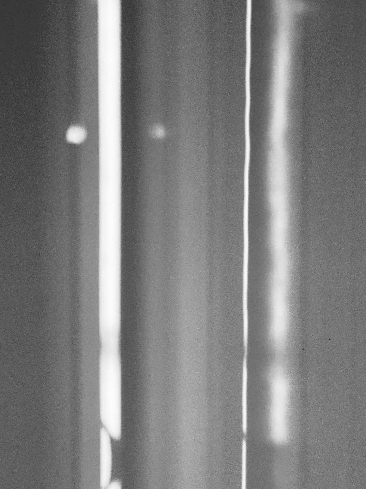
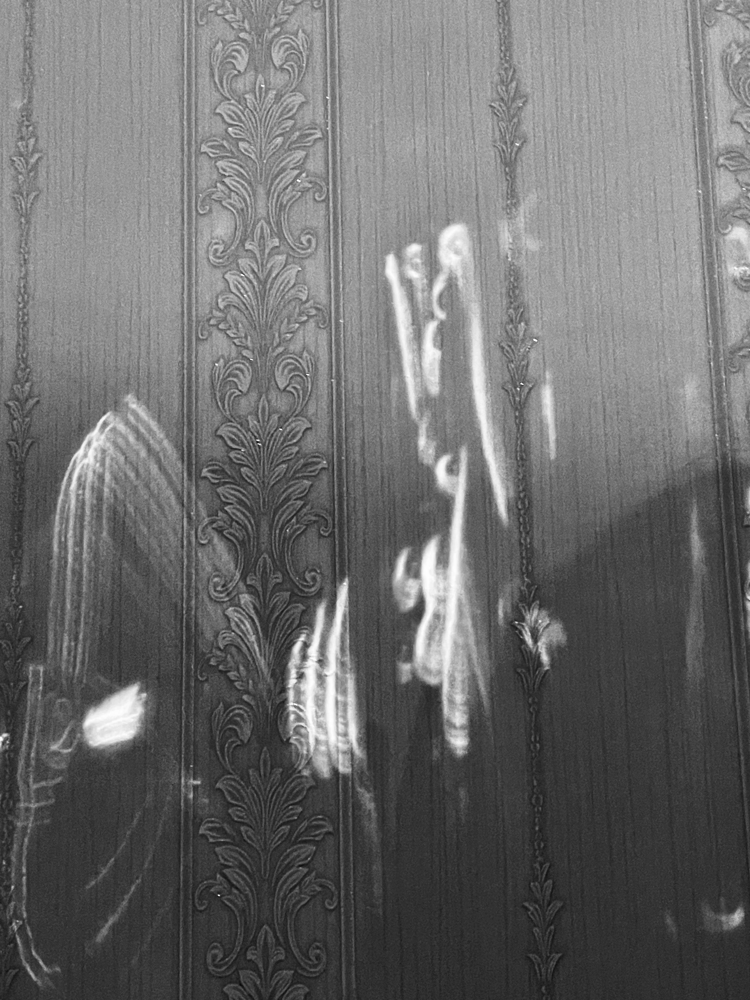
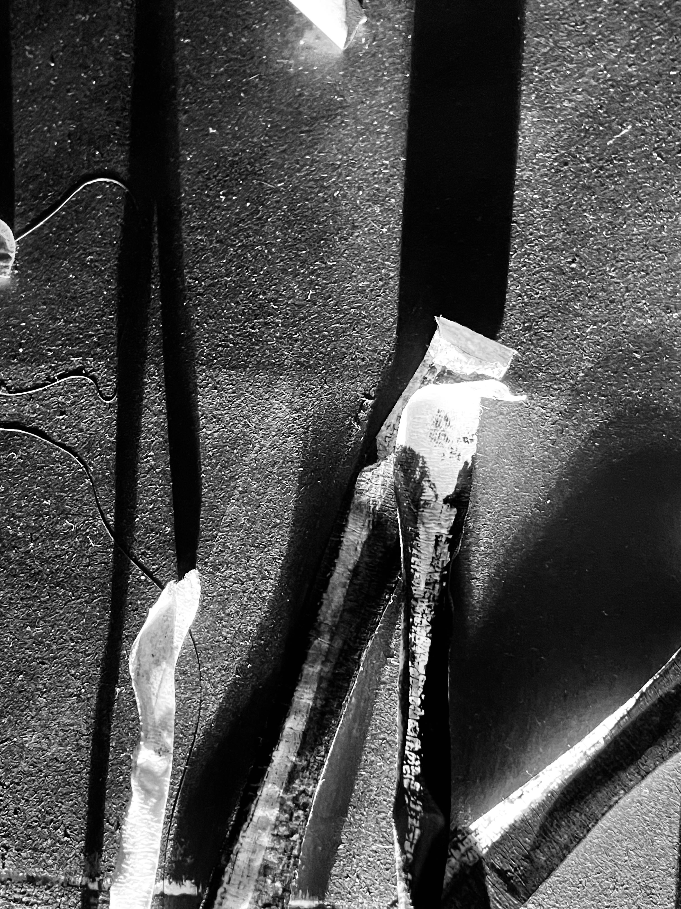
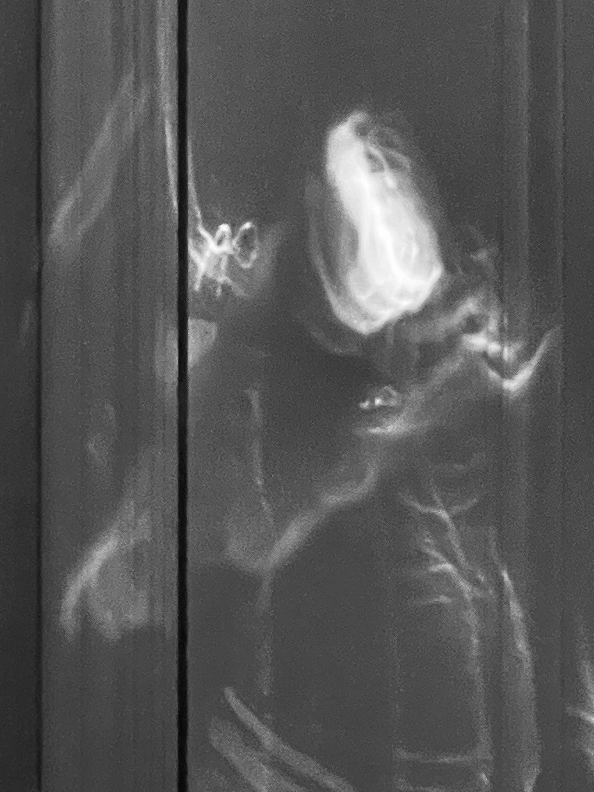
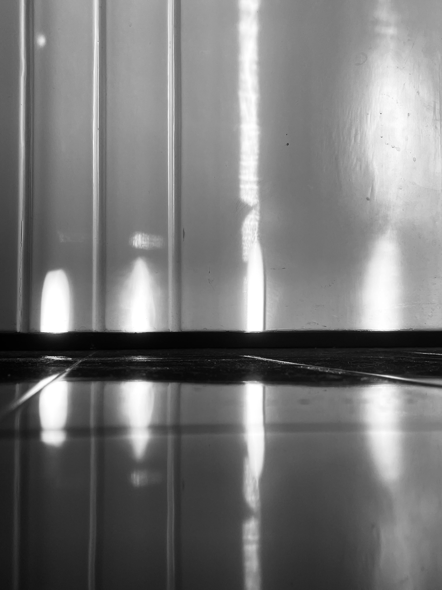

- 
- 
- 
- 
/IMG_4279.jpg)
/IMG_4283.jpg)
- 
/IMG_4291.jpg)
/IMG_4293.jpg)
My work is rooted in the idea of using light and shadow as sculptures, transforming commonplace objects
into
abstract
art. I am fascinated by the ephemeral nature of light and how it can be used to create evocative
images.
To achieve this, I experimented with different light sources and background textures, including LED
lights,
flashlights,
sunlight, and city lights, as well as white walls, wallpaper, door/floor, and textured paper. I also
played
with
composition and angle to create a series of images that capture the interplay between light and
shadow.
The theme-based approach of the frameworks was instrumental in my development as an artist. I chose to
explore the
concept of “exploring light and shadow” inspired by Francesca Woodman’s work, which provided a guiding
principle for my
experimentation.
Through my work, I aim to transcend the traditional idea of a photograph as a mere image by capturing
the
ephemeral
qualities of light and creating something abstract and sculptural. By displaying a series of images in
exhibitions, I
hope to expand the concept of two-dimensional photographic art and inspire viewers to see light and
shadow
in a new way.